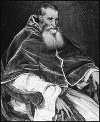

Roma Katolik Kilisesi, 1545 yılına gelindiğinde Protestan Reformu nedeniyle ciddi zarar görmüştü. Aralarında Danimarka, İsveç, İngiltere ve Almanya’nın da bulunduğu Kuzey Avrupa’nın büyük bir bölümü Katolikliğe sırtını dönmüştü.

Katolikliğin zayıflamasını durdurmakla görevlendirilen kişi Papa 3. Paul’dü (1468-1549). 1534 yılında Papa seçilen bir İtalyan kardinaliydi. Karşı-reform olarak da bilinen Katolikliğin toparlanması sürecini başlattı. Papanın 1545’te “Trento Konsili”ni toplamasıyla başlayan olaylar dizisi içerisinde kilise bir yandan temel inançlarını muhafaza ederken diğer taraftan bir dizi iç reform gerçekleştirdi.
Gerçek adı Alessandro Farnese olan Papa, varlıklı bir Roma ailesinin evladı olarak dünyaya geldi. Geçmişte bu aileden piskoposlar, askerler ve en azından bir başka Papa daha, 8. Boniface (1235-1303) çıkmıştı. Farnese, Muhteşem Lorenzo’nun (1449-1492) Floransa’daki sarayında eğitim aldı. 1493 yılında henüz yirmi beş yaşındayken kardinal oldu.
Gençliğinde adı Protestan reformcuların kınadığı pek çok suistimalle birlikte anıldı. Kilisedeki pozisyonu ona kilise mallarından kaynaklanan muazzam bir gelir sağlıyordu. Bunu sanata ve saraylara harcadı. Aynı zamanda Aziz Peter Basilikası’nın inşa edilmesini destekleyenlerden biriydi. Binanın inşaatı büyük ölçüde endüljans satışları ile finanse edilmişti. Endüljans satışları Martin Luther (1483-1546) tarafından eleştirilen başlıca kilise icraatlarından biriydi.
Papa seçildikten sonra, kilisenin değişikliğe gitmeden varlığını sürdüremeyeceğini diğer Katolik liderden daha iyi anladı. Pek çok kardinalin itirazına rağmen, kilisedeki yozlaşmaya son vermek için “Trento Konsili”ni topladı. Endüljans ve papaz maaşları konusunda müsamahalı davranışlara son verdi. Konsil uzun yıllar çalışmalarına devam etti. Papa’nın ölümüne kadar bu çalışmalar durmadı. Bu süreçte en çok tepki toplayan kilise icraatlarına son verildi.
Papa 3. Paul, yaptığı reformlara rağmen aynı zamanda muhalifleri bastırmaya ve kendi iktidarını güçlendirmeye yönelik de birçok önlem aldı. En kötü şöhretli icraatı ise Roma engizisyonu olarak da bilinen Kutsal Ofis’in kurulmasıydı. Kutsal Ofis, 1542 yılında sapkınların teşhis edilmesi, cezalandırılması ve Katolik Kilisesi’nin savunulması ile görevlendirilmişti.
Ek Bilgiler
1- Bekaret yeminine rağmen Paul’ün gayrimeşru bir çocuğu vardı: Pier Luigi Farnese (1503-1547). 1545 yılında Parma Dükü olmuş ve 1547 yılında öldürülmüştür. Pier’in oğlu Ranuccio (1530-1565) ise henüz on beş yaşındayken dedesi Paul tarafından kardinal yapılmıştır.
2- Papa 3. Paul’ün 1537 yılında yayınladığı bir buyruk olan “Sublimus Dei” Amerikan yerlilerinin köleleştirilmesine yasak getiriyordu. Yerlilerin maruz kaldığı kötü muamele nedeniyle çıkarılan bu karar, İspanya ve Portekiz tarafından büyük ölçüde görmezden gelinmiştir.
3- Ölümünün ardından Paul, Michalengelo (1475-1564) tarafından tasarlanan bir mezara Roma’da gömüldü. Paul daha önce de Michalengelo’ya “Kıyamet Günü Tablosu”nu çizme ve Aziz Peter Kilisesi’nin tasarımı ve inşasına nezaret etme görevlerini vermişti.